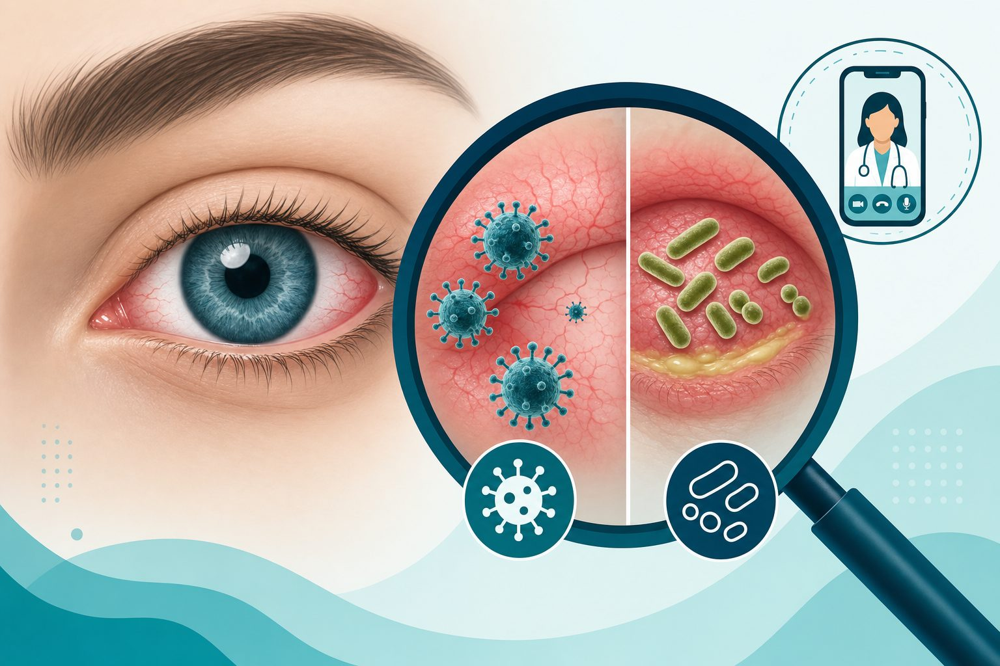
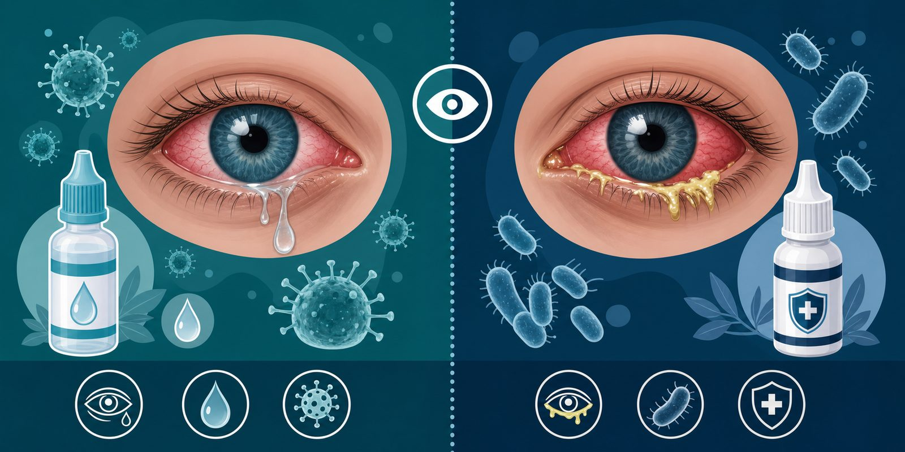

Key Takeaways
- Viruses cause up to 80% of conjunctivitis cases,[4] and antibiotics will not improve viral pink eye.[8]
- Even bacterial conjunctivitis is self-limited in at least 60% of cases without any treatment.[2]
- A Cochrane review of 21 RCTs (8,805 participants) found antibiotics likely raise the chance of clinical cure in bacterial conjunctivitis by 26% (relative): 68.2% versus 55.5% with placebo by days 4 to 9.[1]
- Better diagnosis matters: one study estimated that in-office rapid adenovirus testing could prevent 1.1 million cases of inappropriate antibiotic treatment.[2]
- In a randomized trial, a delayed prescription cut antibiotic use to 53% (versus 99% with immediate antibiotics) with similar symptom severity,[7] and a wait-and-see policy is considered a reasonable approach for uncomplicated cases.[2]

The Pink Eye Antibiotic Reflex
Pink eye is one of the most common reasons adults seek same-day care. Acute conjunctivitis affects an estimated 6 million people a year in the United States, and about 70% of patients with acute conjunctivitis present to primary care and urgent care.[2]
The reflex response in many clinics is simple: write a prescription for antibiotic eye drops and send the patient home. It feels safe, and the patient walks out with a treatment in hand.
But current evidence shows that reflex is usually unnecessary, and sometimes counterproductive. Viral conjunctivitis is the most common infectious cause in adults, and antibiotics do not work on viruses. In viral pink eye, antibiotic drops can cause allergy and toxicity and can delay the diagnosis of other eye diseases.[2]
The diagnostic step that separates "needs antibiotics" from "needs supportive care" is mostly a matter of history and a clear look at the eye. Telehealth can make that step easier.
The Big Picture: What Causes Pink Eye in Adults
Conjunctivitis falls into a handful of categories, and each one calls for a different approach. Sorting them apart is where most of the work happens.
Viral conjunctivitis (up to 80% of acute cases)
Viral pink eye is the most common form by a wide margin. Adenoviruses are responsible for 65–90% of viral cases in adults.[4] It is often associated with an upper respiratory infection such as a cold. The discharge is typically watery, and it often starts in one eye, with the second eye involved within one or two days. It usually goes away on its own after one to two weeks.[6]
Bacterial conjunctivitis (the second most common infectious cause)
Common pathogens include Staphylococcus, Streptococcus, and Haemophilus influenzae. Purulent or mucopurulent discharge (thick, sticky, often yellow or green) is often due to bacterial infection, and eyelids stuck together on waking, with no itching, are among the strongest clues. At least 60% of suspected or culture-proven cases are self-limiting within 1 to 2 weeks.[2] Mild bacterial pink eye usually clears in 2 to 5 days without treatment but can take 2 weeks to go away completely.[8]
Allergic conjunctivitis
No infection involved. Itchy, watery, bilateral eyes that often arrive with sneezing, nasal congestion, or other allergy symptoms. Itching is the most consistent sign, and in a large systematic review both antihistamine and mast cell stabilizer drops were superior to placebo for symptoms.[2]
Hyperacute bacterial conjunctivitis (rare but urgent)
Often caused by Neisseria gonorrhoeae in sexually active adults. It causes a severe, copious purulent discharge, often with decreased vision; it has a sudden onset, progresses rapidly, and carries a high risk of corneal perforation.[2][6] It is vision-threatening and requires immediate systemic treatment (intramuscular ceftriaxone) and prompt in-person ophthalmology care.[2][3][6]

What the Evidence Says About Antibiotics
The strongest data on antibiotic eye drops comes from the Cochrane review, last updated in 2023. It included 21 randomized controlled trials with 8,805 participants who had acute bacterial conjunctivitis, all treated with topical drops or ointment versus placebo.[1]
In the intention-to-treat analysis, antibiotics likely improved clinical cure by 26% (RR 1.26; 95% CI 1.09 to 1.46; 5 trials, 1,474 participants; moderate certainty). In absolute terms, 55.5% of placebo patients had spontaneous clinical resolution by days 4 to 9, versus 68.2% of those treated with an antibiotic. Among participants with a positive culture, antibiotics likely increased microbiological cure (RR 1.53; 95% CI 1.34 to 1.74; 10 trials, 2,827 participants). The review authors describe this as a modestly improved chance of resolution.[1]
That sounds like a clear win, but the catch is the diagnosis itself. Bacterial pathogens are isolated in only 50% of cases of suspected conjunctivitis, clinical accuracy in diagnosing viral conjunctivitis is less than 50% compared with laboratory confirmation, and many viral cases are misdiagnosed as bacterial.[2] So when a clinic prescribes drops for every "pink eye," many of those prescriptions are aimed at a target that isn't there.
Antibiotic drops are not risk-free. The Cochrane review found no evidence of serious systemic side effects, but compared with placebo, non-fluoroquinolone drops were linked to more ocular side effects (RR 4.05; 95% CI 1.36 to 12.00), with very low certainty evidence.[1] In viral pink eye, antibiotic drops can also cause allergy and toxicity and delay the diagnosis of other eye diseases.[2] The better strategy is the one the data supports: differentiate viral from bacterial first, then decide.
Watchful Waiting: A Reasonable Approach
For typical bacterial pink eye without red flags, the evidence supports a delayed-prescription strategy. In a randomized trial in 30 general practices in southern England (307 adults and children with acute infective conjunctivitis), patients in the delayed group could collect their prescription after three days, at their own discretion.[7]
Antibiotic use was 99% with immediate antibiotics, 53% with a delayed prescription, and 30% with no prescription. The strategies did not differ in symptom severity on days 1 to 3, though moderate symptoms lasted 3.3 days with immediate antibiotics, 3.9 days with a delayed prescription, and 4.8 days with none. The authors concluded that delayed prescribing is probably the most appropriate strategy for acute conjunctivitis in primary care: it reduces antibiotic use and reattendance compared with immediate prescribing.[7] The safety net stays in place, and unnecessary drops get avoided in cases that would have resolved anyway.
Reviews point the same way. A JAMA systematic review concluded that no treatment, a wait-and-see policy, and immediate treatment all appear to be reasonable approaches in uncomplicated cases,[2] and an American Family Physician review notes that delaying antibiotic therapy is an option for acute bacterial conjunctivitis in many patients.[6] The 2024 American Academy of Ophthalmology Preferred Practice Pattern states that mild bacterial conjunctivitis is likely to be self-limited and that indiscriminate use of topical antibiotics or corticosteroids should be avoided.[3]
| Pink Eye Type | Cause | Typical Discharge | First-Line Approach | When to Escalate |
|---|---|---|---|---|
| Viral | Adenoviruses (65–90%)[4] | Watery, clear | Supportive care: cold compresses, artificial tears, hygiene[2][8] | Severe symptoms, photophobia, or no resolution after 7 to 10 days[2][6] |
| Mild bacterial | Staph, Strep, H. influenzae | Mucopurulent, sticky | Watchful waiting or delayed prescription[2][7] | Worse, or not better after 3 days: start the delayed prescription[7] |
| Moderate bacterial | Same | Heavier purulent | Topical antibiotic (e.g., erythromycin, polymyxin-trimethoprim)[2][9][10] | No improvement after 24 hours of antibiotic use[8] |
| Hyperacute | Neisseria gonorrhoeae | Copious, rapid onset | URGENT in-person care: immediate systemic treatment[3][6] | Immediate (vision-threatening)[3] |
| Allergic | Histamine release | Watery, itchy | Antihistamine or mast cell stabilizer drops[2] | Vision loss or moderate to severe pain[2] |
Where Telehealth Fits
Pink eye is well-suited to photo-based or video-based assessment. Much of the key information (discharge type, redness pattern, eyelid involvement, symptom timeline) comes from the history and a basic look at the eye. Even in primary care offices, the eye exam is often limited by the lack of a slit lamp, and useful information can still be obtained with a simple penlight.[2]
Remote exams are not perfect. A 2023 study of technician-led tele-ophthalmic exams at a rural vision centre in southern India, compared with an in-person ophthalmologist exam, reported 72.2% sensitivity for infective conjunctivitis.[5] That setting differs from a home video visit, so a remote assessment should lean toward in-person care whenever a red flag appears.
In a virtual visit, the physician can:
- Compare discharge type (watery vs. purulent) on a high-quality photo
- Assess redness pattern and unilateral vs. bilateral involvement
- Take a structured history of onset, contact lens use, sick contacts, and allergies
- Screen for red flags requiring in-person referral
- Issue a delayed prescription or a supportive care plan
For most adults with uncomplicated pink eye, this is faster than an in-person appointment, and particularly useful for confirming that the diagnosis is not urgent.
What This Means for You
If your symptoms are mild and your discharge is watery, your pink eye is more likely viral. Treatment is supportive: cold compresses, artificial tears, and good hand hygiene.[2] Antibiotic drops will not improve it.[8]
If your discharge is thick and yellow or green, it may be bacterial, but many cases still clear on their own, usually in 2 to 5 days, though it can take 2 weeks to go away completely.[8] A clinician can talk you through watchful waiting before defaulting to antibiotic drops.
If you wear contact lenses, this is a different conversation. Remove them right away and get evaluated: the possibility of bacterial keratitis is high in lens wearers, who should be treated with antibiotic drops and referred to an ophthalmologist.[2] Treatment for lens wearers needs to cover Pseudomonas, and keratitis can cause pain and reduced vision.[6]
A telehealth visit can usually sort which category you're in within a few minutes, and you'll walk away with a clear plan instead of an automatic prescription.
Red Flags: Always See a Doctor in Person
Some symptoms move pink eye out of the routine category and into something that needs hands-on examination. Get in-person care for any of these:
- Severe eye pain (not just irritation or grittiness)[2][6]
- Vision changes or blurry vision that doesn't clear with blinking[2][8]
- Sensitivity to light beyond mild discomfort[2][8]
- Contact lens wearer with a red eye[2]
- Recent eye surgery or eye trauma[6]
- Copious purulent discharge, especially with a sudden onset and rapid worsening (concern for gonococcal infection)[2][6]
- Symptoms that get worse or do not improve, including bacterial pink eye that does not improve after 24 hours of antibiotics,[8] or no improvement after 1 week[2]
- Immunocompromised patient with a red eye[8]
How to cite this guide
Bhavsar P. Pink Eye in Adults: Antibiotics vs. Watchful Waiting - What the Evidence Says. TeleDirectMD Health Guides. Last reviewed May 11, 2026. https://teledirectmd.com/health-guides/pink-eye-adults-antibiotics-vs-watchful-waiting/
References
- Chen YY, Liu SH, Nurmatov U, van Schayck OCP, Kuo IC. "Antibiotics versus placebo for acute bacterial conjunctivitis." Cochrane Database Syst Rev. 2023;3(3):CD001211. pubmed.ncbi.nlm.nih.gov
- Azari AA, Barney NP. "Conjunctivitis: A Systematic Review of Diagnosis and Treatment." JAMA. 2013;310(16):1721-1729. pmc.ncbi.nlm.nih.gov
- Cheung AY, Choi DS, Ahmad S, et al. "Conjunctivitis Preferred Practice Pattern." American Academy of Ophthalmology. Ophthalmology. 2024;131(4):P134-P204. doi.org
- Shunmugam M, Giovannetti F, Yeung SN, Iovieno A. "An Update on Viral Conjunctivitis Treatment Strategies: A Narrative Literature Review." Microorganisms. 2025;13(8):1712. pmc.ncbi.nlm.nih.gov
- Joseph S, Rajendran VK, Khetwani D, et al. "Evaluation of a telemedicine-enabled universal eye health delivery model in rural southern India." Eye (Lond). 2024;38(6):1202-1207. Published online December 6, 2023. pmc.ncbi.nlm.nih.gov
- Cronau H, Kankanala RR, Mauger T. "Diagnosis and Management of Red Eye in Primary Care." American Family Physician. 2010;81(2):137-144. aafp.org
- Everitt HA, Little PS, Smith PWF. "A randomised controlled trial of management strategies for acute infective conjunctivitis in general practice." BMJ. 2006;333(7563):321. Correction: BMJ. 2006;333(7566):468. pmc.ncbi.nlm.nih.gov
- Centers for Disease Control and Prevention (CDC). "How to Treat Pink Eye." Updated April 15, 2024. Accessed November 15, 2026. cdc.gov
- Bausch & Lomb Incorporated. "Erythromycin Ophthalmic Ointment USP, 0.5%." Prescribing information, revised March 2025. DailyMed. Accessed November 15, 2026. dailymed.nlm.nih.gov
- Bausch & Lomb Incorporated. "Polymyxin B Sulfate and Trimethoprim Ophthalmic Solution." Prescribing information, revised October 2025. DailyMed. Accessed November 15, 2026. dailymed.nlm.nih.gov